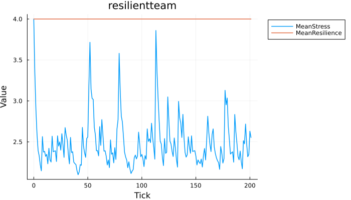
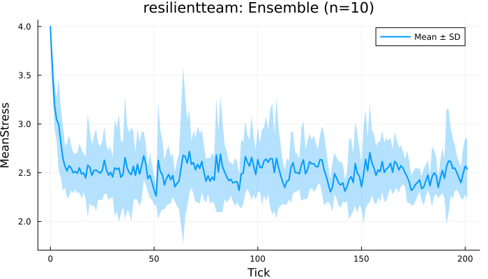
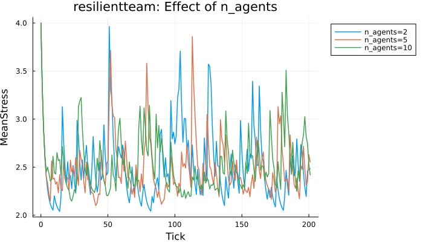

Resilient Team
Overview
This vignette demonstrates the Resilient Team model implemented in ArkModelZoo.jl using the Ark.jl ECS framework.
Parameters
| Parameter | Type | Default | Description |
|---|---|---|---|
n_agents | Int | 5 | n agents |
scale_min | Float64 | 1.0 | scale min |
scale_max | Float64 | 7.0 | scale max |
init_value | Float64 | 4.0 | init value |
init_rate | Float64 | 0.5 | init rate |
num_ticks | Int | 200 | num ticks |
Source Code
The Julia code to run this model:
using ArkModelZoo
_, trajectory = run_resilient()Time Series

Ensemble Runs
Ten replicates with different random seeds, showing mean ± standard deviation.

Parameter Sensitivity
Varying n_agents.

Appendix: Source Code
This model is implemented in the Ark.jl Entity-Component-System (ECS) framework. The code is split into five files, each with a distinct role:
- Parameters: a mutable struct holding all configurable values.
- Components: lightweight data types attached to individual entities (agents).
- Resources: world-level shared state accessible to all systems.
- Systems: functions that operate on entities each tick, defining model behavior.
- Model: wiring that assembles the world, registers resources and systems, and provides the run entry point.
Parameters (parameters.jl)
The parameter struct uses @kwdef so that every field has a default value and can be overridden by keyword. These defaults match the original NetLogo model’s slider settings.
Base.@kwdef mutable struct ResilientParams
seed::Int = 42
n_agents::Int = 5
scale_min::Float64 = 1.0
scale_max::Float64 = 7.0
init_value::Float64 = 4.0
init_rate::Float64 = 0.5
zipf_values::Vector{Int} = [1, 2, 3, 4, 5, 6, 7]
zipf_weights::Vector{Float64} = [0.818, 0.143, 0.020, 0.010, 0.005, 0.003, 0.001]
num_ticks::Int = 200
endComponents (components.jl)
Components are lightweight data types attached to individual entities (agents). Mutable structs hold per-entity state, while empty tag structs act as markers for the ECS query system to efficiently filter entities.
struct ResilientDummy endResources (resources.jl)
Resources are world-level singletons shared across all systems, used for global state and aggregate statistics.
mutable struct ResilientAgentState
belief::Vector{Float64}
belongsafe::Vector{Float64}
contribute::Vector{Float64}
hope::Vector{Float64}
resilience::Vector{Float64}
strength::Vector{Float64}
stress::Vector{Float64}
trusted::Vector{Float64}
# Rates
blame_rate::Vector{Float64}
gratitude_rate::Vector{Float64}
hope_rate::Vector{Float64}
listen_rate::Vector{Float64}
spend_rate::Vector{Float64}
recovery_rate::Vector{Float64}
seekhelp_rate::Vector{Float64}
trust_rate::Vector{Float64}
end
function ResilientAgentState(n::Int, init_val::Float64, init_rate::Float64)
return ResilientAgentState(
fill(init_val, n), fill(init_val, n), fill(init_val, n), fill(init_val, n),
fill(init_val, n), fill(init_val, n), fill(init_val, n), fill(init_val, n),
fill(init_rate, n), fill(init_rate, n), fill(init_rate, n), fill(init_rate, n),
fill(init_rate, n), fill(init_rate, n), fill(init_rate, n), fill(init_rate, n),
)
end
mutable struct ResilientRelationState
# Numerator variables (N_*)
n_blame::Matrix{Float64}
n_feedback::Matrix{Float64}
n_gratitude::Matrix{Float64}
n_interact_rate::Matrix{Float64}
n_recrimination::Matrix{Float64}
n_seekhelp::Matrix{Float64}
n_spend::Matrix{Float64}
n_stress::Matrix{Float64}
n_trust::Matrix{Float64}
# Decision variables (D_*)
d_belief::Matrix{Float64}
d_blame::Matrix{Float64}
d_gratitude::Matrix{Float64}
d_hope::Matrix{Float64}
d_listen::Matrix{Float64}
d_seekhelp::Matrix{Float64}
d_spend::Matrix{Float64}
end
function ResilientRelationState(n::Int)
return ResilientRelationState(
ones(n, n), ones(n, n), ones(n, n),
fill(0.5, n, n),
ones(n, n), ones(n, n), ones(n, n), ones(n, n), ones(n, n),
ones(n, n), ones(n, n), ones(n, n), ones(n, n), ones(n, n), ones(n, n), ones(n, n),
)
end
mutable struct ResilientEnvState
ei_stress::Vector{Float64}
eg_stress::Float64
end
ResilientEnvState(n::Int) = ResilientEnvState(zeros(n), 0.0)
mutable struct ResilientStats
mean_stress::Float64
mean_resilience::Float64
end
ResilientStats() = ResilientStats(0.0, 0.0)Systems (systems.jl)
Systems contain the model logic and execute in a defined order each tick. Each system struct implements either initialize! (run once at setup) or update! (run every tick).
# --- Helper: Zipf-weighted sampling ---
function _resilient_zipf_sample(rng, values::Vector{Int}, weights::Vector{Float64})
r = rand(rng)
cumw = 0.0
for i in eachindex(values)
cumw += weights[i]
if r <= cumw
return Float64(values[i])
end
end
return Float64(values[end])
end
# --- Helper: Scale value from [x_min, x_max] to [a, b] ---
@inline function _resilient_scale(x::Float64, x_min::Float64, x_max::Float64, a::Float64, b::Float64)
if x_max == x_min
return a
end
return ((x - x_min) / (x_max - x_min)) * (b - a) + a
end
# --- Systems ---
struct InitResilientSystem <: System end
function initialize!(::InitResilientSystem, world::World)
params = get_resource(world, ResilientParams)
agents = get_resource(world, ResilientAgentState)
stats = get_resource(world, ResilientStats)
stats.mean_stress = mean(agents.stress)
stats.mean_resilience = mean(agents.resilience)
end
struct ResilientEnvSystem <: System end
function update!(::ResilientEnvSystem, world::World)
params = get_resource(world, ResilientParams)
rng = get_resource(world, RNGResource).rng
env = get_resource(world, ResilientEnvState)
n = params.n_agents
# EI_stress and EG_stress drawn from Zipf distribution
for i in 1:n
env.ei_stress[i] = _resilient_zipf_sample(rng, params.zipf_values, params.zipf_weights)
end
env.eg_stress = _resilient_zipf_sample(rng, params.zipf_values, params.zipf_weights)
end
struct ResilientPerceiveSystem <: System end
function update!(::ResilientPerceiveSystem, world::World)
params = get_resource(world, ResilientParams)
agents = get_resource(world, ResilientAgentState)
env = get_resource(world, ResilientEnvState)
a = params.scale_min
b = params.scale_max
n = params.n_agents
for i in 1:n
# stress += scaled(EI_stress + EG_stress), then divide by scaled(resilience)
raw_env = env.ei_stress[i] + env.eg_stress
scaled_env = _resilient_scale(raw_env, 2.0, 14.0, a, b)
agents.stress[i] += scaled_env
scaled_resilience = _resilient_scale(agents.resilience[i], 1.0, 7.0, 1.0, 2.0)
agents.stress[i] /= scaled_resilience
agents.stress[i] = clamp(agents.stress[i], 1.0, 7.0)
end
end
struct ResilientDecisionSystem <: System end
function update!(::ResilientDecisionSystem, world::World)
params = get_resource(world, ResilientParams)
agents = get_resource(world, ResilientAgentState)
rels = get_resource(world, ResilientRelationState)
a = params.scale_min
b = params.scale_max
n = params.n_agents
for i in 1:n
# D_listen for all relations from i
for j in 1:n
i == j && continue
raw = agents.listen_rate[i] * (agents.resilience[i] + agents.belongsafe[i] - agents.stress[i]) / 2.0
rels.d_listen[i, j] = clamp(_resilient_scale(raw, -3.5, 6.5, a, b), a, b)
end
# Mean incoming N_trust for agent i
trust_sum = 0.0
trust_count = 0
for j in 1:n
j == i && continue
trust_sum += rels.n_trust[j, i]
trust_count += 1
end
mean_n_trust = trust_count > 0 ? trust_sum / trust_count : 1.0
# D_seekhelp
for j in 1:n
i == j && continue
if agents.stress[i] > agents.resilience[i] && mean_n_trust > 3.0
raw = agents.seekhelp_rate[i] * (mean_n_trust + agents.belongsafe[i] + agents.stress[i])
rels.d_seekhelp[i, j] = clamp(_resilient_scale(raw, 0.0, 10.5, a, b), a, b)
else
rels.d_seekhelp[i, j] = 1.0
end
end
# D_blame
for j in 1:n
i == j && continue
if agents.stress[i] > agents.resilience[i] && mean_n_trust < 4.0
raw = agents.blame_rate[i] * ((8.0 - agents.belongsafe[i]) + agents.stress[i] + (8.0 - mean_n_trust))
rels.d_blame[i, j] = clamp(_resilient_scale(raw, 0.0, 10.5, a, b), a, b)
else
rels.d_blame[i, j] = 1.0
end
end
# D_spend
for j in 1:n
i == j && continue
mean_n_seekhelp = 0.0
sh_count = 0
for k in 1:n
k == i && continue
mean_n_seekhelp += rels.n_seekhelp[k, i]
sh_count += 1
end
mean_n_seekhelp = sh_count > 0 ? mean_n_seekhelp / sh_count : 1.0
raw = agents.spend_rate[i] * (mean_n_seekhelp + agents.resilience[i] + agents.belongsafe[i])
rels.d_spend[i, j] = clamp(_resilient_scale(raw, 0.0, 10.5, a, b), a, b)
end
end
end
struct ResilientChangeSystem <: System end
function update!(::ResilientChangeSystem, world::World)
params = get_resource(world, ResilientParams)
agents = get_resource(world, ResilientAgentState)
rels = get_resource(world, ResilientRelationState)
a = params.scale_min
b = params.scale_max
n = params.n_agents
for i in 1:n
# trusted = mean of incoming N_trust
trust_sum = 0.0
trust_count = 0
for j in 1:n
j == i && continue
trust_sum += rels.n_trust[j, i]
trust_count += 1
end
agents.trusted[i] = trust_count > 0 ? trust_sum / trust_count : 1.0
# belongsafe = scaled((mean D_seekhelp + (8 - mean D_blame)*3))
seekhelp_sum = 0.0
blame_sum = 0.0
count = 0
for j in 1:n
j == i && continue
seekhelp_sum += rels.d_seekhelp[j, i]
blame_sum += rels.d_blame[j, i]
count += 1
end
mean_seekhelp = count > 0 ? seekhelp_sum / count : 1.0
mean_blame = count > 0 ? blame_sum / count : 1.0
raw = mean_seekhelp + (8.0 - mean_blame) * 3.0
agents.belongsafe[i] = clamp(_resilient_scale(raw, 0.0, 28.0, a, b), a, b)
end
end
struct ResilientActSystem <: System end
function update!(::ResilientActSystem, world::World)
params = get_resource(world, ResilientParams)
agents = get_resource(world, ResilientAgentState)
rels = get_resource(world, ResilientRelationState)
n = params.n_agents
# N_seekhelp: reset all to 1, then each agent sets max D_seekhelp relation to 7
for i in 1:n, j in 1:n
rels.n_seekhelp[i, j] = 1.0
end
for i in 1:n
max_val = -Inf
max_j = 0
for j in 1:n
j == i && continue
if rels.d_seekhelp[i, j] > max_val
max_val = rels.d_seekhelp[i, j]
max_j = j
end
end
if max_j > 0
rels.n_seekhelp[i, max_j] = 7.0
end
end
end
struct ResilientStatsSystem <: System end
function update!(::ResilientStatsSystem, world::World)
agents = get_resource(world, ResilientAgentState)
stats = get_resource(world, ResilientStats)
stats.mean_stress = mean(agents.stress)
stats.mean_resilience = mean(agents.resilience)
end
struct ResilientTerminationSystem <: System end
function update!(::ResilientTerminationSystem, world::World)
params = get_resource(world, ResilientParams)
tick = get_resource(world, Tick).tick
if tick >= params.num_ticks
get_resource(world, Terminate).stop = true
end
endModel (model.jl)
The model file assembles all pieces: it creates the ECS World with the required component types, registers resources, builds the Scheduler with systems in execution order, and exposes the public run entry point. The observer pattern records the trajectory each tick.
function resilient_world(; initial_capacity::Int = 128)
return World(ResilientDummy; initial_capacity=initial_capacity, allow_mutable=true)
end
function resilient_systems()
return (
InitResilientSystem(),
ResilientEnvSystem(),
ResilientPerceiveSystem(),
ResilientDecisionSystem(),
ResilientChangeSystem(),
ResilientActSystem(),
ResilientStatsSystem(),
ResilientTerminationSystem(),
)
end
function resilient_model(params::ResilientParams = ResilientParams())
world = resilient_world()
_add_standard_resources!(world, params)
add_resource!(world, ResilientAgentState(params.n_agents, params.init_value, params.init_rate))
add_resource!(world, ResilientRelationState(params.n_agents))
add_resource!(world, ResilientEnvState(params.n_agents))
add_resource!(world, ResilientStats())
scheduler = Scheduler(world, resilient_systems())
initialize!(scheduler)
return scheduler
end
struct ResilientObserver end
function resilient_headers(::ResilientObserver)
return ["MeanStress", "MeanResilience"]
end
function resilient_values(::ResilientObserver, world::World)
stats = get_resource(world, ResilientStats)
return Float64[stats.mean_stress, stats.mean_resilience]
end
function run_resilient(; params::ResilientParams = ResilientParams(), observe::Bool = true)
return _run_model(resilient_model, ResilientObserver(), resilient_values; params, observe)
end